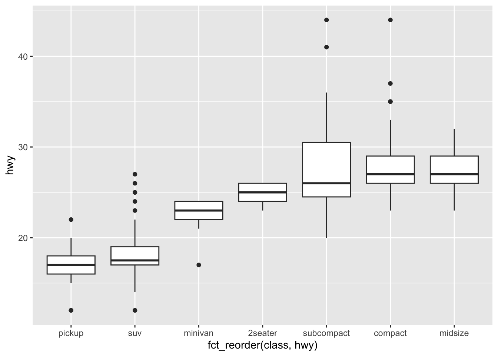
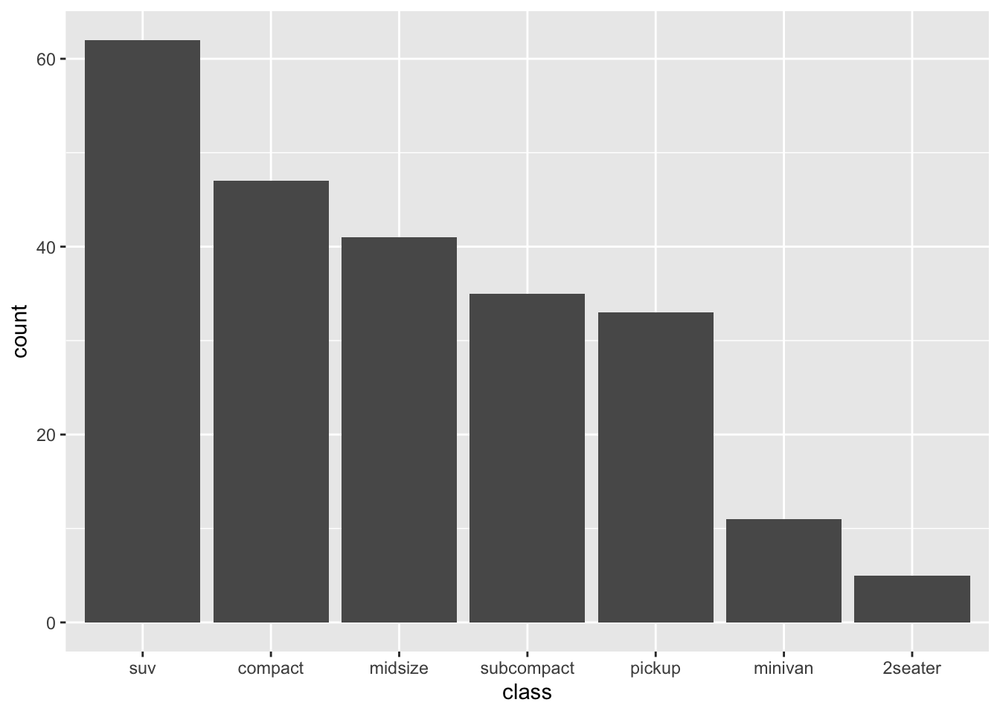

[1] "high" "low" "medium"12 Factors and Categorical Data with forcats
12.1 Learning Objectives
By the end of this chapter, you should be able to:
- Understand what factors are and why they are used
- Reorder factor levels to improve plots
- Rename factor levels
- Collapse multiple levels into broader categories
- Use
forcatsfunctions to manipulate categorical variables effectively
12.2 Introduction to Factors
Factors are used to work with categorical data (variables with a fixed set of possible values).
R uses factors to control ordering in plots and summaries.
Example:
12.3 Using forcats
The forcats package provides helper functions for factors.
── Attaching core tidyverse packages ──────────────────────── tidyverse 2.0.0 ──
✔ dplyr 1.1.4 ✔ readr 2.1.5
✔ ggplot2 3.5.1 ✔ stringr 1.5.1
✔ lubridate 1.9.3 ✔ tibble 3.2.1
✔ purrr 1.0.2 ✔ tidyr 1.3.1
── Conflicts ────────────────────────────────────────── tidyverse_conflicts() ──
✖ dplyr::filter() masks stats::filter()
✖ dplyr::lag() masks stats::lag()
ℹ Use the conflicted package (<http://conflicted.r-lib.org/>) to force all conflicts to become errors12.4 Reordering Factor Levels
12.4.1 fct_reorder()
Reorders factor levels by another variable (e.g., mean of a numeric variable):
ggplot(mpg, aes(x = fct_reorder(class, hwy), y = hwy)) +
geom_boxplot()
12.4.2 In-Class Exercise 1 – Reordering
- Use
fct_reorder()to reorder car classes in thempgdataset by highway mpg.
- Make a boxplot of
hwyby class.
- Which class has the highest median mpg?
12.5 Changing Factor Labels
12.5.1 fct_recode()
Renames levels:
mpg |>
mutate(drv = fct_recode(drv,
"front-wheel" = "f",
"rear-wheel" = "r",
"4-wheel" = "4"
)) |>
count(drv)# A tibble: 3 × 2
drv n
<fct> <int>
1 4-wheel 103
2 front-wheel 106
3 rear-wheel 2512.5.2 In-Class Exercise 2 – Recoding
- Recode the
drvvariable to use descriptive names.
- Count the number of cars in each drive category.
12.6 Collapsing Levels
12.6.1 fct_collapse()
Combines multiple levels into broader categories.
mpg |>
mutate(class_grouped = fct_collapse(class,
small = c("2seater", "compact", "subcompact"),
large = c("suv", "pickup", "minivan")
)) |>
count(class_grouped)# A tibble: 3 × 2
class_grouped n
<fct> <int>
1 small 87
2 midsize 41
3 large 10612.6.2 In-Class Exercise 3 – Collapsing Levels
- Create a new variable that collapses
classintosmallvs.large.
- Make a bar chart of the collapsed variable.
12.7 Reordering Factors for Plots
12.7.1 fct_infreq()
Orders factors by frequency:
mpg |>
mutate(class = fct_infreq(class)) |>
ggplot(aes(x = class)) +
geom_bar()
12.7.2 In-Class Challenge – Factor Workflow
Using the mpg dataset:
- Reorder the
manufacturervariable by number of cars - Collapse classes into fewer categories
- Create a bar plot that uses the new ordering and grouping
12.8 Homework Preview
For the next homework, you will:
- Choose a dataset with at least one categorical variable
- Use
forcatsfunctions to:- Reorder levels
- Recode labels
- Collapse levels where appropriate
- Produce at least one visualization that uses your factor manipulations
- Render to PDF and submit on Canvas
12.9 Next Steps
Next, we will learn how to work with relational data using dplyr join functions to combine multiple datasets.